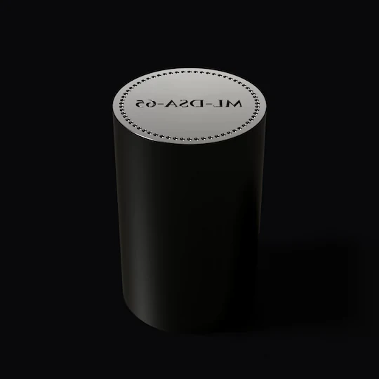
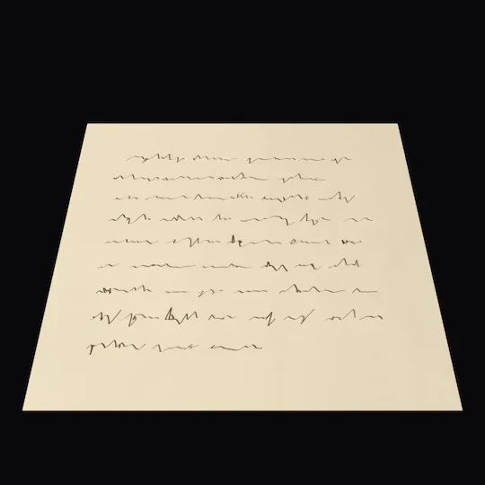
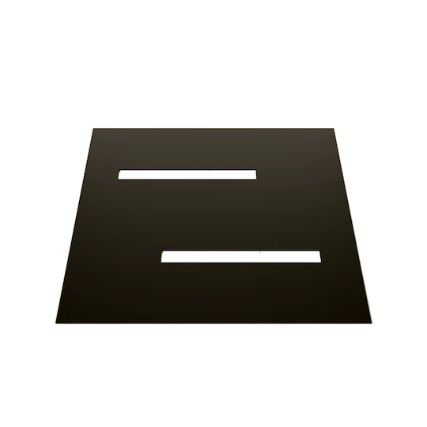
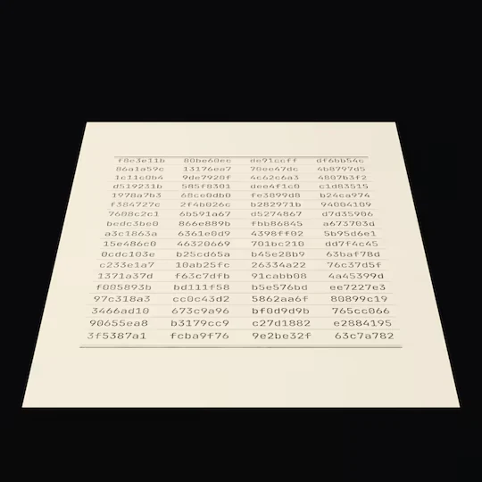
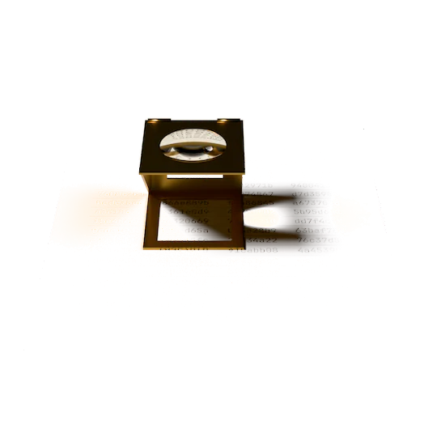

Polaris ID · The identity token system
An authority issues a credential, the person holds it, and anyone can check that it is genuine, offline, against published keys, with no server and no network.
The record
National wallet sandboxes
-
Germany’s EUDI wallet sandbox accepted Polaris’s use case.
-
Norway’s Digdir registered Polaris as a relying party in its national wallet sandbox.
-
Taiwan’s Ministry of Digital Affairs opened issuer and verifier accounts for Polaris in its digital wallet sandbox.
-
Denmark’s Agency for Digital Government opened AltID test access for Polaris.
In their own CI
-
IDFoundry’s OID4VCgo began running Polaris’s verifier in its own CI, every day and on each of its releases.
-
OID4VCgo merged Polaris’s refusal tests into its CI.
-
vouchkit merged 20 of Polaris’s refusal tests into its CI.
-
OpenWallet Foundation Labs’ identity-common-ts merged 25.
-
openeudi/openid4vp merged 54.
Reported results
-
Neil Berkman of Xuku LLC, which makes Attesto, reported that Attesto 2.17.0 refused all 66 of Polaris’s refusal tests, as published in version 0.4.0 of the test set.
Credited fixes
-
liboqs-python’s maintainers fixed a vulnerability Egor Khaklin reported and published an advisory crediting him.
-
OpenWallet Foundation Labs’ identity-common-ts published an advisory crediting Egor Khaklin; the fixed SD-JWT packages (0.24.1, 30 October) carry his commit.
Changed after a report
and
OID4VCgo (v0.22.0, the day of the report) and eudi-dev (v2.5.0) changed after reports from Polaris.
In their catalogs
-
FIDES listed Polaris’s verifier in its relying-party catalog.
The runs, merges and advisories, each dated: the public record on GitHub
Tested with
16outside projects
- European CommissionEUDI Wallet OpenID4VP library (Kotlin)
- EUDI Wallet OpenID4VP library (Swift)
- EUDI PID issuer
- OpenWallet FoundationCredo
- Multipaz
- Axle (OpenWallet Foundation Labs)
- Walletswalt.id Wallet API
- eudi-dev
- OID4VCgo
- ProtocolSoup
- Procivis One Core
- Yivi app
- swiyu Sandbox Wallet (Switzerland)
- Libraries and toolsvck (A-SIT Plus)
- openid4vp (SpruceID)
- ERICA
Polaris ran each of these tests itself; the public record gives each version, date and result.
How it works
-
Issue
An authority signs the credential with ML-DSA-65. Two independent ML-DSA implementations must agree, or issuance stops.
-
Hold
The person holds the credential. In zero-knowledge mode, a check is issuer-unlinkable and stores no credential identifier.
-
Verify
Anyone checks it offline, against published keys, with no server and no network. Whether it counts right now is answered online, or by a short-lived signed status assertion.





The rules
- The audit record is append-only.Enforced by a trigger and the grants
- A zero-knowledge verification stores no credential identifier.Enforced by a check constraint
- One person holds at most one active identity token.Enforced by a unique index
- Identity is not money.Held by absence
The first three are refusals written into the schema. The fourth is an absence: no monetary table or column exists. All four are checked on every build.
The hard cases
Duress-aware: a second code, quietly on the record.
What a coercer sees
Code one
Verified
Code two
Verified
Duress recorded, silently.
A second code, built for a coercer who does not know it exists, verifies normally and silently records duress in the append-only audit record.
Lose every device, and come back.
- Biometric check Attested by an operator other than the one who opened the request.
- Sworn statement Recorded as its SHA-256 fingerprint, never as text.
- Witness, second authority An operator from another authority signs as witness, in their own name.
Where all three cross After a 48-hour wait, an admin who neither opened the request nor witnessed it approves. The lost credentials are revoked and a new one is issued.
A person who loses every device comes back through a ceremony that needs all three: a biometric check, a sworn statement and a witness from a second authority.
Algorithm migration: two signatures, never none.
The signing algorithm is data. During a move between algorithms a credential carries two signatures, and the database never leaves it without an active one.
Peace of mind, without surveillance.
Our aim is a safer, more peaceful world, where anyone can prove who they are without being watched.
Fixus inter mutabilia
Work with us
Public services and sandbox operators
Run a wallet sandbox or a public service? Invite Polaris to test with you.
Wallet and verifier maintainers
Put Polaris’s refusal tests in your CI: 34 SD-JWT VC presentations and 32 mdoc device responses that must be refused.
Engineers and implementers
Run the one-minute check from an empty folder. Tell us what you found.
Security researchers
Try to break a claim. The review packet and the red-team scope are public; report what you find privately.
Investors and funders
Investing in identity? Write to the founder.
Writers, organisers and connectors
Presenting identity work? Write to us.
Egor Khaklin founded Polaris ID, and Khaklin Technologies™ builds it. liboqs-python’s maintainers fixed a security issue he reported, and OpenWallet Foundation Labs’ identity-common-ts released his fix for another; both published advisories crediting him.